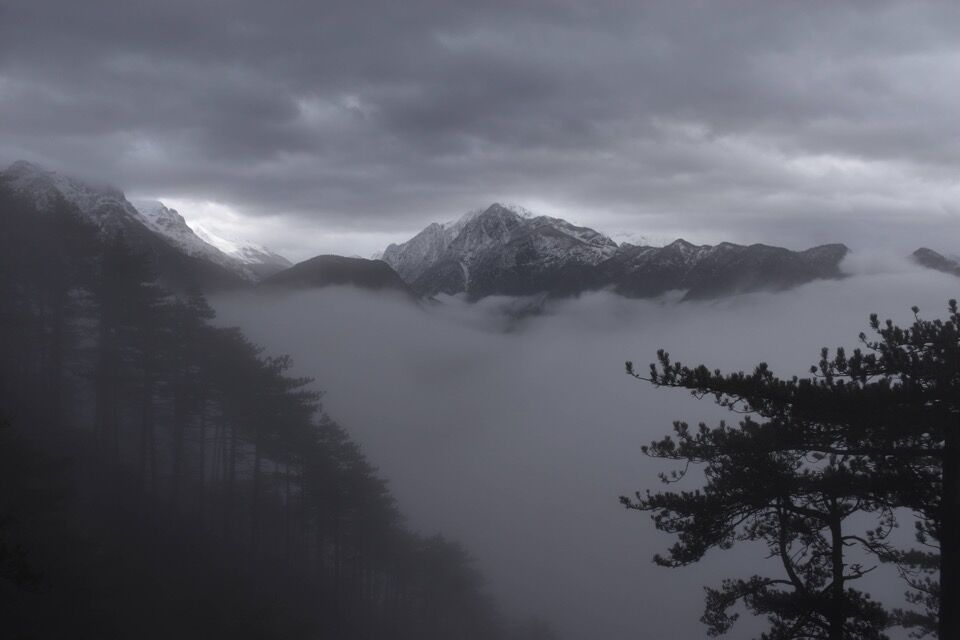
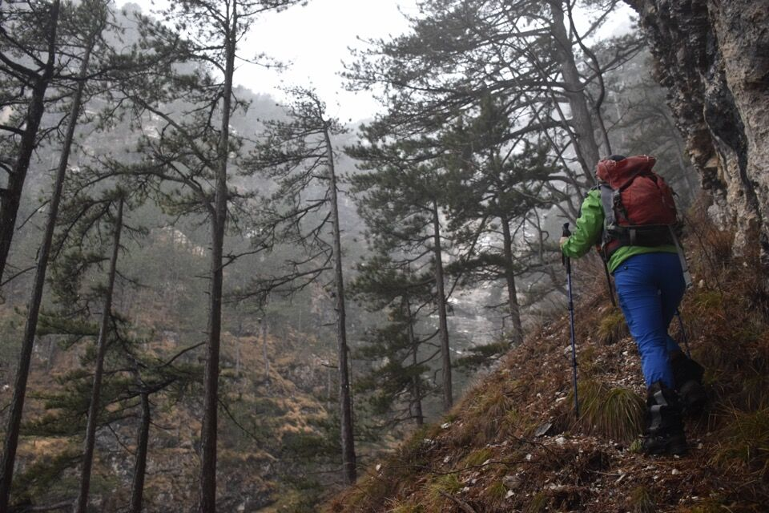
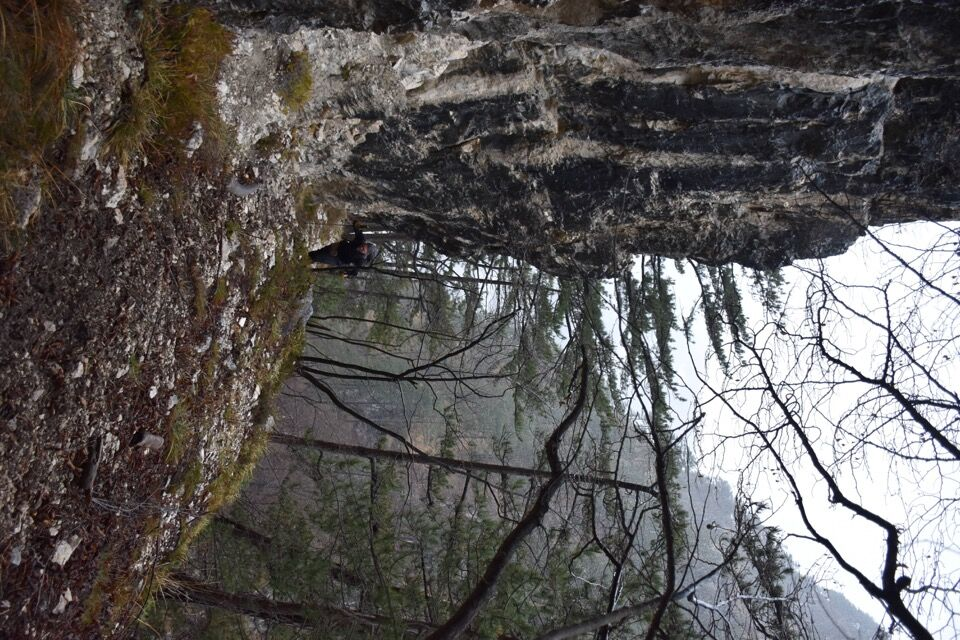
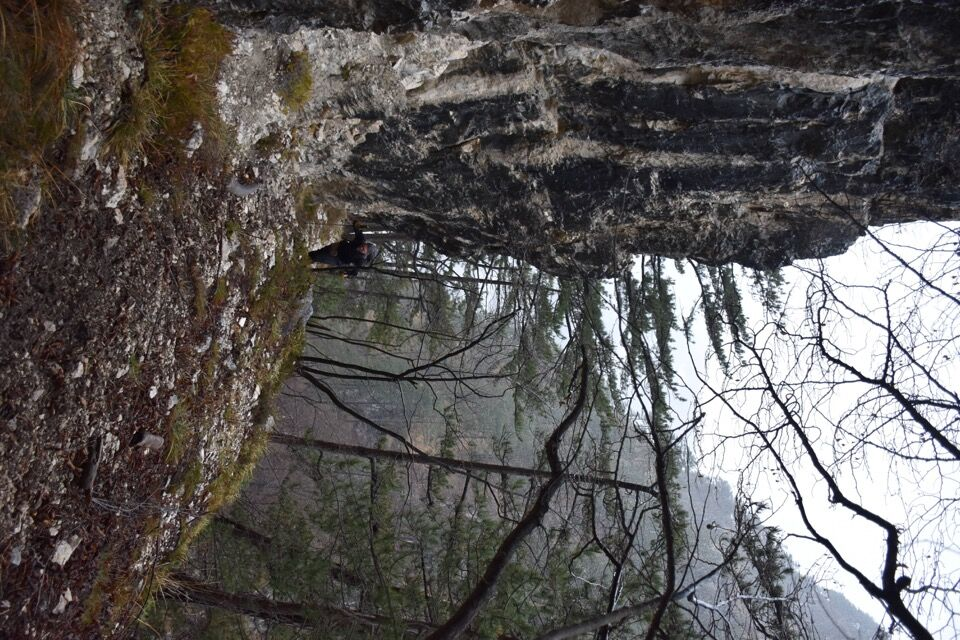
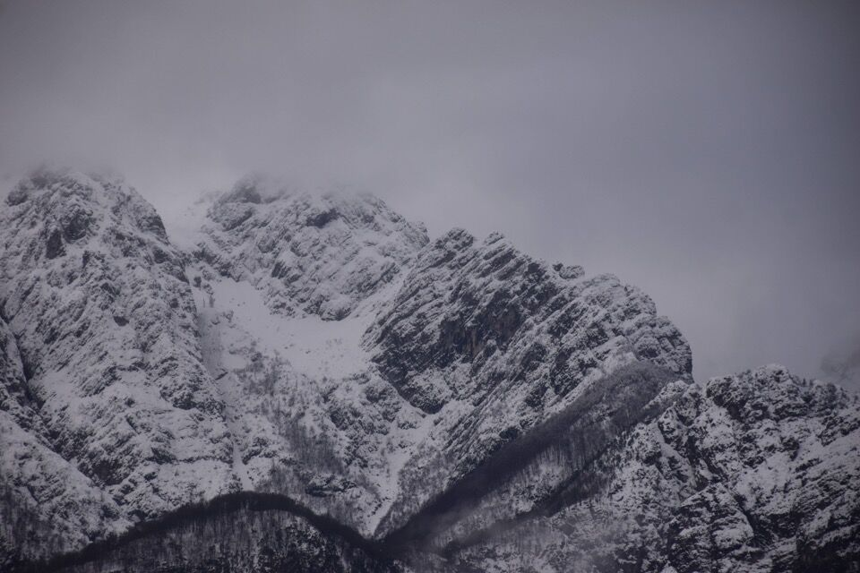

Pic di Babe
NUOVO
Al M. Belepéit per la Scjalùte Sante e la Pale dal Muart
In molti conoscono la storia dei due borbardieri americani abbattuti durante la Seconda Guerra Mondiale sui cieli sopra Chiusaforte, schiantatisi sul monte Belepéit; vale la pena, seguendo passo passo questo articolo, ripercorrere cosa successe quel giorno.


Il 16 febbrario 1945 uno squadrone di B-24 americani, partiti dalla base alleata di Venosa in Basilicata, facenti parti dell'829° Sq. del 485° BG della XV Air Force USAAF, stava tornando alla base dopo una incursione nei pressi di Regensburg; uno di questi, comandato dal colonnello John Porter Tomhave, alle 14.15 a quota 5200 metri venne colpito dal fuoco di due cannoni da 88mm della contraerea tedesca, nei pressi di Dogna, entrando in collisione con un secondo B-24, quello del tenente Carl Daniel Stockdale. I due aerei precipitarono: soltanto dieci aviatori riuscirono a salvarsi con il paracadute (tutti tranne uno, il mitragliere Lewis B. Matthews, finirono nelle mani dei tedeschi) mentre altri dieci periscono nello schianto.
Ha dell'incredibile la storia del colonnello Olen Cooper Bryant, che precipitò nel vuoto senza paracadute da un'altezza di più di duemila metri, riuscendosi miracolosamente a salvare grazie all'impatto con una cornice di neve.
Agli aviatori periti nello schianto venne data una sepoltura in una fossa comune nei pressi del relitto di uno dei due aeroplani: a tutti tranne uno, dato che il corpo di questo venne trovato a notevole distanza dal punto di caduta, su un ripido costone sul versante Sud-Est del Belepéit; a lui venne data un sepoltura spartana direttamente nel posto in cui fu trovato, che da quel momento venne chiamato dai valligiani la Pale dal Muart.
Chi fosse il muart della Pale dal Muart è rimasto un mistero per più di sessant'anni: grazie al passaparola su internet tra i parenti dei caduti si è finalmente saputo, soltanto nel 2009, che si trattava del sergente James W. Dixon, membro dell'equipaggio dell'aereo del colonnello Tomhave. Nato il 19 luglio 1919 a Blissfield (Michigan), al momento dello schianto aveva 26 anni; giunto in Italia nell'estate del 1944, era specializzato come tecnico motorista. I genitori seppero vennere a sapere soltanto il 5 settembre 1946, più di un anno dopo il disastro, che il figlio era sepolto a Mirandola, vicino Modena; il rimpatrio della salma avvenne due anni dopo, e il 9 dicembre 1948 ebbe luogo il funerale di James Dixon nel Grand Lawn Cemetery di Detroit.

Partiamo come al solito da Vilegnove; acqua da tutte le parti.

Avevo già percorso un anno fa il sentiero di avvicinamento, chiave d'accesso a diversi posti: Cret di Belepéit, via delle cenge "a zeta", alla q688 sotto al grande antro, allo stavolo Zeresarie...
Non saprei dare indicazioni migliori di quelle che da il Paolini: non c'è traccia e bisogna arrangiarsi, ma vi assicuro che è facile e noi ci siamo proprio divertiti a cercare e trovarne l'inizio (una bella scjalùte in roccia); una volta imboccata non si può sbagliare.

Il troi da Scjalùte Sante aggira o supera i salti sfruttando i punti deboli del costone; alcuni passaggi ripidi richiedono attenzione.

E che scjalùte! (scavata a pônte e maciul)
Comunque, arrivati ad un pianoro, ricordavo le parole del Paolini («[...] è preferibile non seguire l'invitante traccia che attraversa verso sinistra un insidioso impluvio (variante d'accesso alla Pale dal Muart) [...]»), beh, già che siamo qua vuoi non dare una occhiata?

Con qualche passo infido iniziamo ad attraversare per cenge.

Il tempo, anche se poco propizio alle nostre attività, ci regala qualche visione affascinante.
Il luogo è molto interessante: dall'altra parte del rio Belepéit si vedono sia la traccia del Creton di Belepéit e sia quelle che sale per cenge all'osservatorio del Belepéit.

Laggiù un piccolo ripiano che ho raggiunto, l'unico luogo (su di un costone in mezzo a dirupi) che sembra adatto ad una sepoltura, ma non c'è nulla di nulla.
Gira e rigira, in cerca di una croce o di un ripiano di sepoltura, dopo un po' a Luciana viene in mente di chiamare il dotôr giusto per dirgli dove eravamo, e per chiedergli se lui ne sapesse qualcosa a riguardo: non l'avessi mai pensato, ci ha spiegato all'istante ogni possibile passaggio per uscire in cresta senza proseguire per la Scjalùte Sante! Ormai è deciso: continuiamo per qua. Peccato che nel mentre abbia iniziato a nevicare copiosamente!

Comunque basta poco per rendersi conto che, forse forse, è possibile scendere per cengia nel rio Belepéit e da lì collegarsi alla via dei cacciatori! (Sapevo infatti dalla suddetta via parte una aerea cengia che arriva nel rio Belepéit)
La cosa mi ha galvanizzato, ma le nostre fonti ci han detto che la cosa è sì possibile ma è bene lasciare questo collegamento ai camosci...
Con grande emozione troviamo una targhetta dedicata al sergente James Dixon, posta sotto un tetto di roccia da Antonio Paolini. Non ho capito se fosse questo il luogo di sepoltura oppure se sia stata messa lì la targhetta in quanto luogo protetto.

Fiduciosi andiamo a prendere una area cengia ascendente, stupenda e insospettabile dal basso. Mica abbiamo visto i cjapiei su cui ha tanto insistito il dotôr.
 

L'ambiente è molto severo e qua con questa neve che continua a cadere bisogna solo uscirne più velocemente possibile.

Attacchiamo un canalino ripidissimo, impegnativo anche con terreno asciutto, che ci mette alla prova. La neve appena caduta ha una tenuta nulla, e ci tocca tirare fuori la corda per dare un minimo di sicurezza. Ci tocca pure superare un passaggio dentro un buco talmente stretto da tover togliere lo zaino!
Notare il pino tagliato anche in questo luogo così impervio.
Scopriremo poi, parlando con gente ben informata, che non è questa la via più semplice; la neve che cadeva fitta e l'ansia di uscire in cresta non ci hanno dato il tempo di ragionare troppo (e poi quel tronco tagliato ci ha sviati).


Ormai è fatta! Ma vi assicuro che è stata tosta.
Zuppi all'inverosimile scendiamo in fretta a furia allo stâli di Belepéit (stâli dal Ferninando, dice M. Compassi), ahimé chiuso.
Scendiamo verso Pulize, facendo prima visita a Dûl, luogo stupendo che non si può non visitare se si passa per di lì!
Dûl, da quanto spiega il dizionario toponomastico di Sclûse, sembra derivi dallo slavo dôl cioè valle/bassura.
La signora Paola Vittor ci racconta che l'ultimo proprietario dello stavolo di Dûl che si vede in foto era suo nonno Luigi Vittor di Volanìc (Vilegnove). Inoltre:
Ricordi lontani: anni '50, con mia mamma il mese d'agosto per lo sfalcio dell'erba. Portavamo per una settimana anche la capra. L'acqua all'attacco del sentiero dalla mulattiera si raccoglieva con la gavetta militare in una piccola bolla risorgiva. La notte col cielo stellato una meraviglia, e con la luna il fascino del Pisimoni di fronte.

Enorme recinto: dovete andare a vedere cosa c'è lì sulla destra...

Dai pressi di Dûl si ha una visione bellissima sul Cretòn di Belepéit...

... e su Chiusaforte e Raccolana.
Anziché tornare a prendere il sentiero CAI, seguiamo una promettente traccia verso Sud; passiamo per l'inizio occidentale della traccia per il Cretòn - di mia conoscenza - e scendiamo a Pulize, passando per il Cuel di Strili (colle dei fulmini), per la traccia segnata in nero sulla Tabacco, che abbiamo ripulito con gran lavoro di segaccio.
Il tempo migliora un po' dopo pranzo: bella visuale sulle due cime del monte Àrghine (in centro foto).
Particolare delle porte di una casa di Meza Pulize... chissà per quanto reggeranno ancora quegli archi.

Uno degli unici stavoli di Pulize ristrutturati.
Torniamo giù, prima diamo un ultimo saluto al Belepéit.